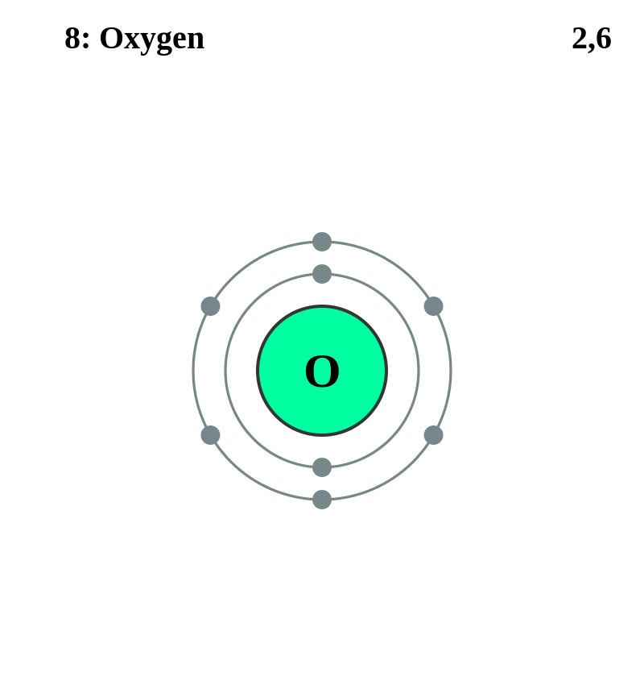

Basic Information about the element
Basic Information about the element
Name: Oxygen
Symbol: O
Atomic Number: 8

1s2 2s2 2p4
The chemical element oxygen is classed as a chalcogen and a nonmetal.
It was discovered in 1774 by Joseph Priestley and and two years earlier, but unpublished, by Carl W. Scheele.
| Number of Protons/Electrons: | 8 |
| Number of Neutrons: | 8 |
| Atomic Mass: | 15.9994 amu |
| Melting Point: | -218.4 °C (54.750008 K, -361.12 °F) |
| Boiling Point: | -183.0 °C (90.15 K, -297.4 °F) |
| Classification: | Nonmetal |
| Uses: | supports life |